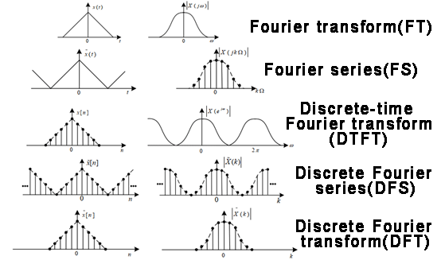
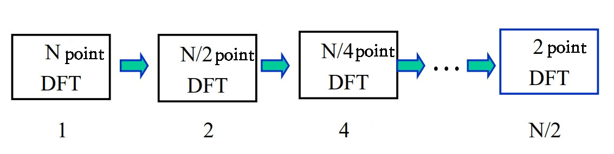
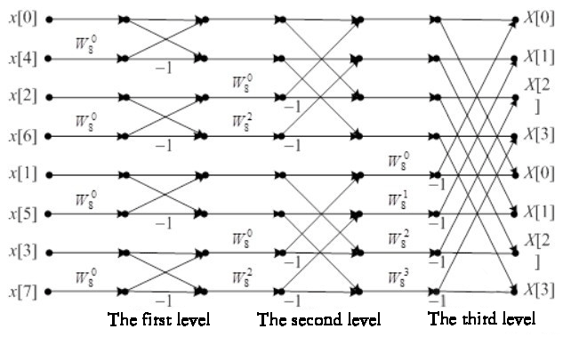
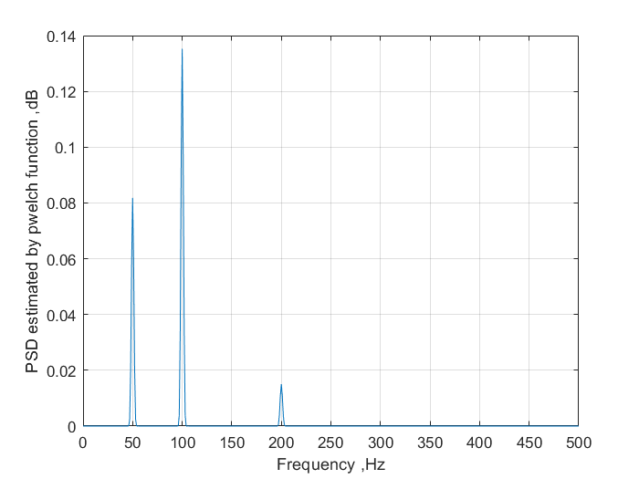
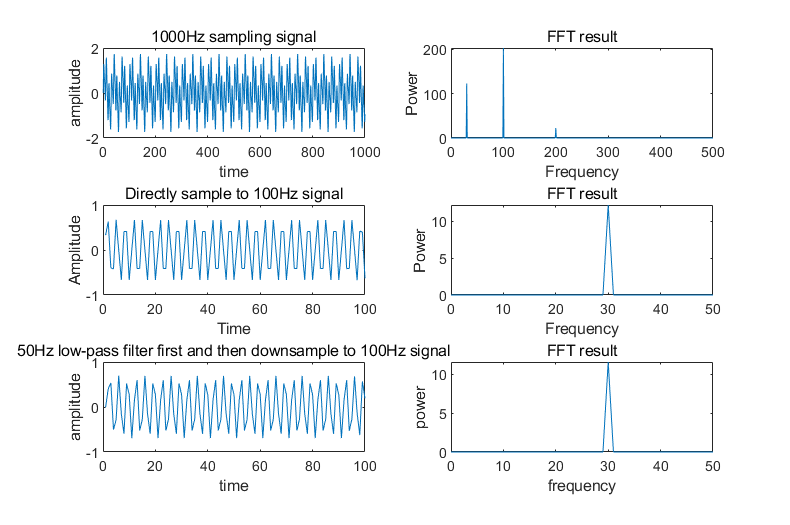
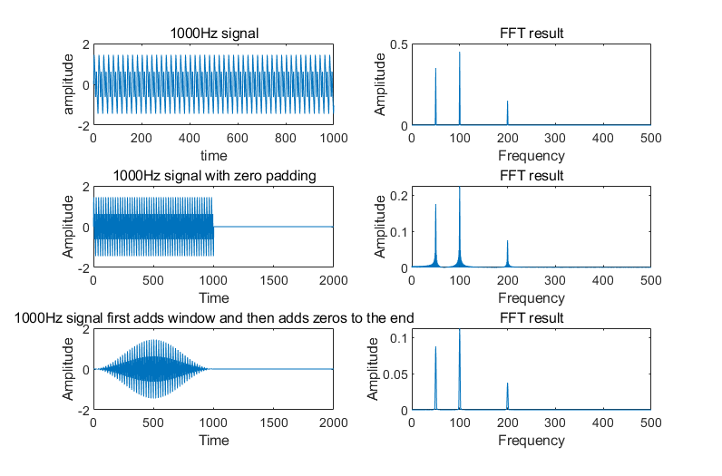
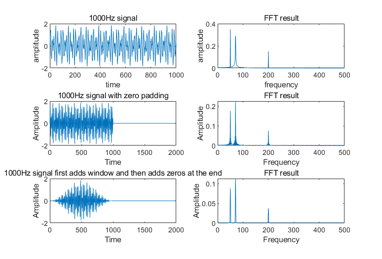
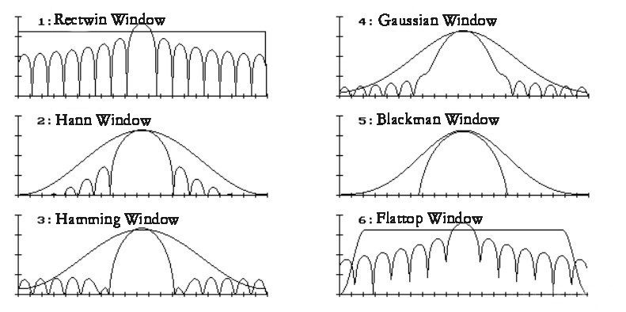

Reference article link:
Fast Fourier Transform (FFT) in Signal Processing - Easy to Understand
Historical Origins
It is believed that many people know Fourier transform, but they are ambiguous about it. Therefore, the past and present of Fourier transform are discussed as follows to have a clear understanding of Fourier transform.
Baron Jean Baptiste Joseph Fourier (March 21, 1768 - May 16, 1830), a native of Auxerre, France, was a famous mathematician and physicist. In 1780, he studied at the local military school. In 1795, he served as an assistant professor at the École Polytechnique in Paris, followed Napoleon's army in the expedition to Egypt, and became the local governor of Grenoble in the Isère Department. In 1817, he was elected as a member of the French Academy of Sciences. In 1822, he served as the lifelong secretary of the Academy, and later served as the lifelong secretary of the French Academy and the chairman of the University of Science and Technology, and was conferred the title of Baron. His main contribution was the study of "The Propagation of Heat" and "The Analytical Theory of Heat", and the creation of a set of mathematical theories, which had a profound impact on the development of mathematics and physics in the 19th century. On May 16, 1830, he died in Paris at the age of 63. His tomb is now located in Père Lachaise Cemetery. The Fourier transform described in this article is named after him.
Fourier was born into a tailor family in Auxerre, central France. He became an orphan at the age of 9 and was adopted by a local bishop. He studied at the local military academy in 1780, became an assistant professor at the Ecole Polytechnique in 1795, and followed Napoleon's army to Egypt in 1798. He was highly regarded by Napoleon and was appointed governor of Grenoble in the Isère department in 1801 after returning to France.
As early as 1807, Fourier wrote a basic paper on heat conduction, "The Propagation of Heat", and submitted it to the Paris Academy of Sciences. However, it was rejected by the Academy after being reviewed by Lagrange, Laplace and Legendre. In 1811, he submitted a revised paper, which won the Academy of Sciences Award, but was not officially published. In the paper, Fourier derived the famous heat conduction equation, and when solving the equation, he found that the solution function can be expressed in the form of a series composed of trigonometric functions, thus proposing that any function can be expanded into an infinite series of trigonometric functions. The theories of Fourier series (i.e. trigonometric series) and Fourier analysis were all founded.
Fourier was elected as a member of the Paris Academy of Sciences in 1817 for his contribution to the theory of heat transfer. In 1822, Fourier finally published his monograph Theorieanalytique de la Chaleur (Didot, Paris, 1822). This classic work developed the trigonometric series method used by Euler, Bernoulli and others in some special cases into a rich general theory. The trigonometric series was later named after Fourier. Fourier used trigonometric series to solve the heat conduction equation, and derived the current so-called "Fourier integral" to deal with the heat conduction problem in infinite regions. All of this greatly promoted the study of boundary value problems of partial differential equations. However, the significance of Fourier's work is far more than that. It forced people to revise and generalize the concept of function, especially causing the discussion of discontinuous functions; the convergence problem of trigonometric series further stimulated the birth of set theory. Therefore, The Analytical Theory of Heat influenced the process of rigorous analysis throughout the 19th century. Fourier became a lifelong secretary of the Academy of Sciences in 1822.
Euler's Formula
Euler's formula is a formula in the field of complex analysis. It relates trigonometric functions to complex exponential functions and is named after its proposer Leonhard Euler. Euler's formula is rated as one of the ten greatest formulas in the world. For any real number \(\phi\), there is: $$e^{i\phi}=cos(\phi )+i\cdot sin(\phi )$$ Where \(e\) is the base of the natural logarithm, \(i\) is the imaginary unit, and \(cos\) and \(sin\) are the trigonometric functions corresponding to cosine and sine, and the parameter \(\phi\) is the angle in radians. As shown in the figure below, in the complex space, \(e^{i\phi}\) can represent any point in the circle, and then through the combination of the real part and the imaginary part, it can correspond one-to-one with any point in the complex plane. In this way, the complex plane can be expressed in exponential form through Euler's formula. The Fourier series itself is expressed in complex form after being transformed into the frequency domain, so it can be unified using an exponential form.

Fourier Series (FS)
(Mathematical definition)
Fourier expansion series:
It states that any periodic continuous function can be represented by an infinite series consisting of sine and cosine functions. This series is called Fourier series because it was proposed by Fourier. Fourier chose sine and cosine functions as basis functions because they are orthogonal. In algebra, we can represent any set of vectors using a linear combination of bases; in functions, we can also represent any function using bases.
In algebra, we hope that the basis is orthogonal to facilitate our search for coefficients of linear combinations, such as orthogonal unit vectors\(\vec{i}=[1,0,0]\), \(\vec{j} = [0,1,0]\), \(\vec{k} =[0,0,1]\), then for any vector in the space, \(\vec{d}=[4,2,1]=4\vec{i}+2\vec{j}+\vec{k}\) can be used to represent it; in function decomposition, we also hope that the basis is orthogonal. Fourier used trigonometric functions as the basis, such as $$\{sin \, t, cos \, t, sin \, 2t, cos \, 2t, sin \, 3t, … sin \, nt, cos \, nt\}$$
It can be proved that this set of trigonometric function basis is an orthogonal function basis. Similarly, any periodic function can be expressed by this set of trigonometric function basis, for example: \(f(x)=a\cdot sin \, t+b\cdot cos \, t\).
So, what is the inner product and what is orthogonal? When two plane vectors are orthogonal, they are perpendicular, and the vector multiplication is \(\vec{a} \cdot \vec{b}=0\). After learning linear algebra, we wrote it as \( \bar{X_{1}}\cdot \bar{X_{2}}^{T}=0 \). The vectors here can be of any dimension, such as \(\left ( X_{1}, X_{2}, X_{3}...X_{n} \right )\). The dot product above is called the inner product of the vectors, that is, the accumulation of the corresponding elements. Orthogonality means that the inner product is 0. Then, similarly, the orthogonality of the inner product of a set of orthogonal function bases can be expressed in integral form: \(\int_{a}^{b} f_{1}(x)\cdot f_{2}(x) \, dx= 0\), two functions are orthogonal, and it can be called that the inner product integrates to 0. Here the function basis can be of any dimension, for example: \(\left( f_{1}(x) , f_{2}(x), f_{3}(x)... f_{n}(x) \right)\).
In algebra, the coefficients of the linear combination of vectors on a basis can be obtained using the inner product; in geometry, the coefficients of the linear combination of vectors on a basis are the projections of the vectors on the basis, that is, the inner product is the projection. In functions, we can use the inner product integral to obtain the corresponding coefficients, and the coefficients of a function on a basis are also the projections on the basis.
For example: the coefficients of the vector \(\vec{a}\) in a set of bases \(\left ( X_{1}, X_{2}, X_{3}...X_{n} \right )\) are \(\vec{a} \cdot X_{1}\), \( \vec{a} \cdot X_{2}\), \(\vec{a} \cdot X_{3}\), \(\cdots\), \(\vec{a} \cdot X_{n}\), where \(\vec{a} \cdot X_{1} = \left | \vec{a} \right | \cdot \left | X_{1}\right | \cdot \cos (\theta )\), which is the projection.
Similarly, the coefficients of the Fourier series expansion: for any function \(f(x)\), expand in the sine basis \(\left ( \sin(\frac{2\pi }{T}), \sin(\frac{4\pi }{T}), \sin(\frac{6\pi }{T}), \cdots , \sin(\frac{2n\pi }{T}) \right )\) and the cosine basis \(\left ( \cos (\frac{2\pi }{T}), \cos (\frac{4\pi }{T}), \cos (\frac{6\pi }{T}), \cdots , \cos (\frac{2n\pi }{T}) \right )\) to obtain the coefficients, where \(\omega_{0} = \frac{2\pi }{T}\), which is what we call angular frequency or frequency or minimum resolution, \(\frac{2n\pi }{T}\) is \(n\) times frequency. For any trigonometric function: \(A \cdot \sin (\omega_{0} \cdot x + b)\), \(A\) is the amplitude, \(\frac{2\pi }{T} = \omega_{0} \) is the angular frequency, \(b\) is the initial phase, \(\omega_{0} \cdot x + b\) is the phase, so that after Fourier series expansion, the amplitude-frequency characteristic and phase-frequency characteristic can be calculated. As shown in the following formula, you can try to substitute \(n=1,2,3,…,N\) into the formula for calculation and deduction. From this, it can be seen that the result of Fourier series expansion is non-periodic discrete.
$$f(x) = \frac{a_0}{2} + \sum_{n=1}^{\infty} \left( a_n \cos \left( \frac{2\pi n x}{T} \right) + b_n \sin \left( \frac{2\pi n x}{T} \right) \right)$$
Among it:
$$a_n = \frac{2}{T} \int_{x_{0}}^{x_{0}+T} f(x) \cos \left( \frac{2\pi n x}{T} \right) \, dx$$
$$b_n = \frac{2}{T} \int_{x_{0}}^{x_{0}+T} f(x) \sin \left( \frac{2\pi n x}{T} \right) \, dx$$
Use Euler's formula to convert to exponential form:
$$f(x) = \sum_{n=-\infty}^{\infty} c_n e^{i \frac{2\pi n x}{T}}$$
Where:
$$c_n = \frac{1}{T} \int_{x_{0}}^{x_{0}+T} f(x) e^{-i \frac{2\pi n x}{T}} \, dx$$
Note: \(\frac{2\pi nx }{T} = \omega_{0} \cdot nx\) is the phase, \(\omega_{0}\) is the angular frequency or minimum frequency resolution, and \(\omega_{0} \cdot n\) is the multiple of \(\omega_{0}\).
Fourier Transform (FT)
In the previous Fourier series (FS), trigonometric functions or exponential forms are used to represent periodic continuous functions. But what about non-periodic continuous functions? Moreover, non-periodic continuous functions are more common than periodic continuous functions. At this time, there is the Fourier transform (FT). The so-called Fourier transform is to generalize the Fourier series to non-periodic continuous functions.
We use the limit idea and assume that the period of a continuous non-periodic function is infinite, and the entire domain of definition is within one of its periods, so that it is impossible for it to repeat this period. In this way, it can be regarded as a periodic continuous function with an infinite period. Formally, it can be expressed as: the period of \(f(x)\) is \(T\rightarrow\infty\), and since \(\omega_{0} = \frac{2\pi }{T}\), so \(\omega_{0}\rightarrow 0\), then for the Fourier series: $$C_{n} = \frac{1}{T} \int_{x0}^{x0+T} f(x) \cdot e ^{-i \frac{2\pi }{T}nx} \, dx = C_{n} = \frac{1}{T} \int_{0}^{T} f(x) \cdot e ^{-in\omega_{0} x} \, dx$$
That is, the function \(C(n\omega_{0})\) about \(n\omega_{0}\). Since \(n\rightarrow\infty\), \(\omega_{0}\rightarrow 0\), \(n\omega_{0}\) has changed from the original discrete angular frequency to a continuous angular frequency, and it is a finite value. We let \(n\omega_{0}\) be \(\omega\). The original Fourier series integral within a period \(T\) becomes an integral within an infinite range due to \(T\rightarrow\infty\). Then there is the Fourier transform formula:
$$C(\omega) = \int_{-\infty}^{\infty} f(x) \cdot e^{-i\omega x} \, dx$$
$$f(x)= \frac{1}{2\pi} \int_{-\infty}^{\infty} C(\omega) \cdot e^{i\omega x} \, dx$$
From this formula, we can see that \(C(\omega)\) is a complex function with frequency as the independent variable, and the result of Fourier transform is non-periodic and continuous.
Discrete Fourier Series (DFS)
In the above part, we understand the results of Fourier calculation for continuous signal functions. Then, in the process of digital signal processing, we often encounter discrete signals, which are sampled from continuous signals. So how to deal with such discrete signals? Here, we first discuss the Fourier results of discrete periodic signal data, also called discrete Fourier series (DFS). Using the sampling theorem, we can also derive the DFS of periodic series from the complex exponential form of the Fourier series of continuous periodic signals.
For a continuous periodic signal \(f(x)\), sample \(N\) points in one period \(T_{0}\), that is, \(T_{0}=NT\), \(\omega_{0} = \frac{2\pi}{T_{0}} =\frac{2\pi}{NT}\), \(T\) is the sampling period, so that a discrete periodic sequence can be obtained: \(x[n]= x[n+mN]\), where \(m\) is an arbitrary integer.
Assume that \(\Omega_{0} = \omega_{0}\cdot T= \frac{2\pi }{N}\), is the angular frequency or minimum frequency resolution in the discrete domain, \(k\Omega_{0}\) is the \(k\)th multiple of \(\Omega_{0}\), \(x = nT\), \(d x = T\), substitute $$C_{n} = \frac{1}{T} \int_{0}^{T} f(x) \cdot e ^{-in\omega_{0} x} \, dx$$
Then:
$$C_k = \frac{1}{NT} \sum_{n=0}^{N} x[nT] \cdot e^{-i k \frac{\Omega_0}{T} nT} \cdot T$$
Remove the period \(T\), and we can get:
$$C_k = \frac{1}{N} \sum_{n=0}^{N} x[n] \cdot e^{-i k \Omega_0 n}$$
Similarly, we can get:
$$x[n] = \sum_{k=0}^{N} C_k \cdot e^{i k \Omega_0 n}$$
From the formula, we can see that since \(x[n]\) is discrete periodic, the discrete Fourier series (DFS) result is discrete periodic.
Discrete-time Fourier Transform (DTFT)
In the previous part, we understood how to process discrete periodic signals. So, how to process discrete non-periodic signals? DTFT By sampling continuous-time non-periodic signals and then taking Fourier transform of the obtained signals, we can obtain the Fourier result of discrete non-periodic signals. This is the so-called "discrete-time" Fourier transform.
Assume that \(T\) is the sampling period, \(N\) is the sampling point, \(x = nT\), \(dx = T\), substitute into Fourier transform (FT)$$C(\omega)= \int_{-\infty }^{\infty} f(x) *e ^{-i\omega x} \, dx$$
We can get:
$$C(\omega ) = \sum_{-\infty }^{+\infty}x[n]e ^{-i\omega n}$$
As shown in the figure below: It can be seen that the discrete non-periodic signal is continuous and periodic after transformation.

Discrete Fourier Transform (DFT)
The spectrum obtained after transforming the discrete non-periodic signal is continuous and periodic. This continuous and periodic spectrum cannot be used in reality. Therefore, we need to sample it on the spectrum and make the spectrum discrete and finite, so we have the discrete Fourier transform (DFT).
We discretize the frequency \(\omega\) at equal intervals of \(\frac{2\pi}{N}\), \(N\) is the number of sampling points in the period, then DFT can be obtained by \(C(\omega ) = \sum_{-\infty }^{+\infty}x[n]e ^{-i\omega n}\):
$$C[k] = \sum_{n=0}^{N-1} x[n] \cdot e^{-i \frac{2\pi}{N} kn}$$
Where, \(k=0,1,2,3,...,N-1\), \(k\) is the spectrum sampling point.
$$x[n] = \sum_{n=0}^{N-1} x[n] \cdot e^{i \frac{2\pi}{N} kn}$$
Wherein, \(k=0,1,2,3,...,N-1\), \(k\) is the spectrum sampling point.
So, how do we get our spectrum and phase spectrum? According to the above formula \(C[k]\), \(\frac{2\pi}{N}\) is expressed in complex exponential form, with real and imaginary parts. The minimum resolution frequency of the spectrum is \(\frac{2\pi}{N}\), \(N\) is the number of sampling points in a DTFT cycle, \(\frac{2\pi}{N}k\) is the \(k\) times of the minimum resolution frequency, and the phase can be obtained by the inverse tangent of the real and imaginary parts of the calculated complex exponential.
As shown in the figure below:

Summary:
1. The relationship between the time domain and frequency domain of various signals (Continuous corresponds to non-periodic, discrete corresponds to periodic)
| Time domain |
Frequency domain |
| Continuous, non-periodic |
non-periodic, continuous |
| continuous, periodic |
non-periodic, discrete |
| discrete, non-periodic |
periodic, continuous |
| discrete, periodic |
periodic, discrete |
2. Graphic examples of various signals

Fast Fourier Transform (FFT)
In the previous part, we understood the discrete Fourier transform (DFT). However, for $$X[k] = \sum_{0 }^{N-1}x[n]e ^{-i\frac{2\pi}{N} kn}, k=0,1,2,3,...,N-1$$
We let \(e ^{-i\frac{2\pi}{N}} kn = W_{N}^{kn}\), then we can get: $$X[k] = \sum_{0 }^{N-1}x[n]W_{N}^{kn}, k=0,1,2,3,...,N-1$$
The calculation results are as follows:
$$\begin{align*}
X(K) &= \sum_{n=0}^{N-1} x(n) W_N^{kn}, \quad k = 0, 1, 2, \ldots, N-1 \\
&= \sum_{n=0}^{N-1} \left( \text{Re}[x(n)] + j \cdot \text{Im}[x(n)] \right) \cdot \left( \text{Re}[W_N^{kn}] + j \cdot \text{Im}[W_N^{kn}] \right) \\
&= \sum_{n=0}^{N-1} \left( \text{Re}[x(n)] \cdot \text{Re}[W_N^{kn}] - \text{Im}[x(n)] \cdot \text{Im}[W_N^{kn}] \right) + j \left( \text{Re}[x(n)] \cdot \text{Im}[W_N^{kn}] + \text{Im}[x(n)] \cdot \text{Re}[W_N^{kn}] \right)
\end{align*}$$
From the calculation results of the above formula, it can be seen that calculating one \(X[k]\) requires \(N\) complex multiplications and \(N-1\) complex additions, calculating \(N\) points \(X[k]\) requires \(N^{2}\) complex multiplications and \(N(N-1)\) complex additions, calculating one complex multiplication requires 4 real number multiplications and 2 real number additions, and one complex number addition requires 2 real number additions. Therefore, each calculation of one \(X[k]\) requires \(4N\) real number multiplications and \(2N+2(N-1)\) real number additions, and calculating \(N\) points \(X[k]\) requires \(4N^{2}\) real number multiplications and \(2N(2N-1)\) complex number additions. In our signal processing process, especially for the data with long signals, the calculation time is very amazing. Therefore, in order to save time, Fast Fourier Transform (FFT) was proposed, that is, radix 2FFT/radix 4FFT, etc. Radix 2FFT is the most widely used in single-chip microcomputer platforms, which greatly reduces the calculation time.
Radix 2 FFT
Assume that the length of the input signal is \(N=2^{M}\) (\(M\) is an integer), use the binary search method to divide the signal into odd columns and even columns in time order, and recursively decompose until there is only one data point in the odd column or the even column, and then use the butterfly calculation method to forward calculate, which is called the FFT algorithm of radix 2 operation extracted by time, also known as the Coolkey-Tukey algorithm. As shown in the figure, N-point DFT->N/2-point DFT->N/4-point DFT...until the calculation of 2-point DFT. Here, the length of the signal must be a power of 2. If it is not a power of 2, zeros are added to the end of the signal until it reaches a power of 2.

Reference：
First, group and permute variables:
$$X(K) = \sum_{n=0}^{N-1} x(n) W_N^{kn}, \quad k = 0, 1, 2, \ldots, N-1$$
Divide \(x(n)\) into two groups according to the parity of \(n\) and permute variables:
When \(n\) is an even number, let
$$n = 2r, \quad x(2r) = x_1(r), \quad r = 0, 1, 2, \ldots, \frac{N}{2} - 1$$
When \(n\) is an odd number, let
$$n = 2r+1, \quad x(2r+1) = x_2(r), \quad r = 0, 1, 2, \ldots, \frac{N}{2} - 1$$
$$X(K) = \sum_{r=0}^{\frac{N}{2}-1} x(2r) W_N^{k \cdot 2r} + W_N^k \sum_{r=0}^{\frac{N}{2}-1} x(2r + 1) W_N^{k \cdot (2r+1)}$$
There is a property of rotation factor \(W_N^{k2r} = e^{-j\frac{2\pi}{N} \cdot 2kr} = e^{-j\frac{2\pi}{\frac{N}{2}} \cdot kr} = W_{\frac{N}{2}}^{kr}\), so,
$$X(K) = \sum_{r=0}^{\frac{N}{2}-1} x(2r) W_{\frac{N}{2}}^{kr} + W_N^k \sum_{r=0}^{\frac{N}{2}-1} x(2r + 1) W_{\frac{N}{2}}^{kr}$$
order
$$X_0(k) = \sum_{r=0}^{\frac{N}{2}-1} x(2r) W_{\frac{N}{2}}^{kr}, \quad X_1(k) = \sum_{r=0}^{\frac{N}{2}-1} x(2r + 1) W_{\frac{N}{2}}^{kr}, \quad W_N^k X_1(k), \quad k = 0, 1, 2, \ldots, \frac{N}{2} - 1$$
According to \(W_N^{k+\frac{N}{2}}=W_N^{\frac{N}{2}} \cdot W_N^k = -W_N^k\), substitute \(K+\frac{N}{2}\) instead of \(K\) into \(X(K)\) to get:
$$X(K + \frac{N}{2}) = X_0(k) - W_N^k X_1(k), \quad k = 0, 1, 2, \ldots, \frac{N}{2} - 1$$
The equations of \(X(K)\) and \(X(K + \frac{N}{2})\) are called butterfly operations, and the butterfly operation flow graph symbol is as follows:

Description of butterfly operation: (1) The two paths on the left are input; (2) The two paths on the right are output; (3) A small circle in the middle represents addition and subtraction operations (the upper right is the addition output, and the lower right is the subtraction output). A butterfly operation requires one complex multiplication and two complex additions.
At this point, a \(N\)-point DFT can be converted into 2 \(\frac{N}{2}\)DFTs. After the second decomposition, the \(\frac{N}{2}\)-point DFT is decomposed into 2 \(\frac{N}{4}\)-point DFTs. And so on. After \(M\) decompositions, the \(N\)-point FFT is finally decomposed into \(N\) 1-point DFTs and \(M\)-level butterfly operations, and the 1-point DFT is the time domain sequence itself.
For the time extraction of base 2, the last level of decomposition is a two-point time domain sequence. The DFT of the two-point sequence is calculated using the following expression:
$$X[0] = x[0] + \omega_2^0 x[1], \quad X[10] = x[0] - \omega_2^0 x[1]$$
That is:
$$X[0] = x[0] + x[1], \quad X[1] = x[0] - x[1]$$
FFT algorithm flow graph rotation factor \(W_N^P\) rule
The first-level butterfly coefficients are all \(W_N^0\), and the distance between butterfly nodes is 1.
The second-level butterfly coefficients are \(W_N^0, \quad W_N^{\frac{N}{4}}\), and the distance between butterfly nodes is 2.
The third-level butterfly coefficient is\(W_N^0, \quad W_N^{\frac{N}{8}}, \quad W_N^{\frac{2N}{8}}, \quad W_N^{\frac{3N}{8}}\), and the distance between butterfly nodes is 4.
The\(M\)-th level butterfly coefficient is\(W_N^0, \quad W_N^1, \quad \cdots, \quad W_N^{(\frac{N}{2} -1)}\), and the distance between butterfly nodes is\(\frac{N}{2}\).
4-point Radix-2 FFT example calculation process:

8-point Radix-2 FFT example calculation process:

Common FFT Tools in MATLAB
1.\(fft(X)\),\(fft(X,N)\). Among them,\(X\) is the input signal sequence, and\(N\) is the number of fft points to be calculated. The fft function in MATLAB is calculated using the DFT algorithm, that is, the default number of fft points calculated by\(fft(X)\) is the length of the X signal sequence, and the number of fft points calculated can also be specified by\(fft (X,N)\). The following code example:
close all;
clear ;
Fs = 1000; % Sampling frequency is 1000
t = 0:1/Fs:1-1/Fs; % Time vector
x = 0.7*sin(2*pi*50*t) +0.9*sin(2*pi*100*t)+ 0.3*sin(2*pi*200*t); % Generate superposition signals with frequencies of 50, 100, 200
N = length(x);
% FFT transformation
Y = fft(x);
% Calculate frequency axis
f = Fs*(0:(N/2))/N;
% Power
power = abs(Y).^2/N;
% Draw spectrum
figure
plot(f, power(1:N/2+1));
title('FFT of Windowed Signal');
xlabel('Frequency (Hz)');
ylabel('power');

2.\([pxx,f] = pwelch(X,window,noverlap,NFFT,fs)\) mainly uses the segmented periodogram method to calculate the power spectrum estimation.
\(x\) is a one-dimensional signal data.
\(window\) is the signal length of each window in the power spectrum calculation. The length of the window function can be selected by referring to the formula. The longer the selected window, the better it can distinguish low-frequency signals. \(noverlap\) is the length of overlap between each segment of the fft calculation window in the function, usually 33%~50%. The more overlap between windows, the smoother the image (blurred); otherwise, the rougher (blocky).
\(NFFT\), that is, the number of FFT data points, can vary. However, the maximum length cannot exceed the number of points in each segment. Of course, \(NFFT\) is usually set to the minimum power of 2 greater than the number of points in each segment, so that the highest frequency domain resolution can be obtained. The smaller \(NFFT\), the rougher it will be in the end.
\(fs\) is the sampling frequency. In the end, the maximum value of the horizontal axis is half of the sampling frequency.
Power Spectral Density (PSD) is a signal analysis method. When analyzing time series, PSD can be used to convert time domain signals to frequency domain and intuitively observe the functional relationship between power and frequency. In layman's terms, PSD shows at which frequencies the data changes/fluctuates greatly, which may be useful for further analysis.
Piecewise periodogram method for estimating PSD
The piecewise periodogram method is a method for reducing the results based on the periodogram method. The process is: divide the sampled data of length \(N\) into \(K\) segments, each segment consists of \(M\) samples, calculate the FFT of each segment separately, and average the results (the purpose is to reduce the variance). However, this also reduces the resolution of the power spectrum.
The calculation formula is as follows:
$$I_{M}^{(i)}(kf_{\Delta}) = \frac{1}{U} \left| \sum_{n=0}^{M-1} x^{(i)} [n] w[n] e^{-j2\pi kf_{\Delta} n} \right|^2 \quad i = 1, 2, \cdots, K $$
Wherein, \(x^{(i)} [n]\) represents the sample in the \(i\)th data record, \(w[n]\) is the window function, and \(f_{\Delta} = \frac{f_i}{M}\) is the frequency resolution, then the \(K\) periodograms are averaged to get the PSD estimate:
$$\hat{S}(kf_{\Delta}) = \frac{1}{K} \sum_{i=1}^{K} I_{M}^{(i)}(kf_{\Delta}), \quad k = 0, 1, \cdots, M-1 $$
Wherein, \(I_{M}^{(i)}(kf_{\Delta})\) is the periodogram of the \(i\)th segment of data, and \(\hat{S}(kf_{\Delta})\) is the estimated value of the power spectral density (PSD).
close all;
clear ;
Fs = 1000; % Sampling frequency is 1000
t = 0:1/Fs:1-1/Fs; % Time vector
x = 0.7*sin(2*pi*50*t) +0.9*sin(2*pi*100*t)+ 0.3*sin(2*pi*200*t); % Generate superposition signals with frequencies of 50, 100, 200
N = length(x);
K = 2; % Divide 1000 points into 2 segments
M = N/K; %M is the number of points in each segment
[pxx,fxx] = pwelch(x,hanning(M),0,N,Fs);
plot(fxx,pxx);
grid;
xlabel('Frequency ,Hz')
ylabel('PSD estimated by pwelch function ,dB')

3.\([pxx,f] = plomb(x,t)\). \(x\) is the input signal, and \(t\) is the corresponding time series.
\(plomb\) is a non-uniformly sampled signal that often appears in the automotive industry, communications, as well as medicine and astronomy. Non-uniform sampling may be caused by sensor imperfections, clock mismatches, or event triggering phenomena.
The calculation and study of spectral content is an important part of signal analysis. Traditional spectral analysis methods require that the input signal is uniformly sampled. When the sampling is non-uniform, the signal can be resampled or interpolated onto a uniform sampling grid. However, this will add unwanted artifacts to the spectrum and may cause analysis errors.
A better alternative is to use the Lomb-Scagler method, which directly handles non-uniform sampling and therefore does not require resampling or interpolation. This algorithm has been implemented in the \(plomb\) function. The specific principle remains to be explored. It is used more in astronomy.
Common Problems in FFT
1. Frequency Aliasing
When a continuous signal is sampled at equal time, if the sampling frequency does not satisfy the sampling theorem, the sampled signal frequency will be aliased, that is, the frequency components above the Nyquist frequency (half the sampling frequency) will be reconstructed into signals below the Nyquist frequency. This distortion caused by the overlap of the spectrum is called aliasing, that is, the high-frequency signal is aliased into a low-frequency signal. Sampling theorem, also known as Shannon sampling theorem, Nyquist sampling theorem, as long as the sampling frequency is greater than or equal to twice the highest frequency of the effective signal, the sampling value can contain all the information of the original signal, and the sampled signal can be restored to the original signal without distortion. As shown in the following figure, the red is the real signal, and the blue is the sampled signal. Because it does not meet the sampling theorem, it is seriously distorted.

Example: In order to avoid frequency aliasing, when we downsample the effective signal, we must first low-pass filter it to the effective signal range, and then downsample it to a reasonable range. For example, as shown in the figure below, the superposition signals with frequencies of 30, 100, and 200 are randomly generated, and the sampling rate of the original signal is 1000Hz. According to the sampling theorem, the effective signal frequency range collected is 0-500Hz. If I want to downsample the original signal 1000Hz to 100Hz at this time, then the sampling theorem shows that the effective signal frequency range collected at 100Hz can only be 0-50Hz at most. So, I have to first pass the original signal through a 50Hz low-pass filter, and then calculate the average of 4 points and downsample it to 100Hz. However, if I want to downsample directly, it will cause serious signal distortion. Please see the difference between the signals in the second and third rows of the figure below.
close all;
clear ;
Fs = 1000; % Sampling frequency is 1000
t = 0:1/Fs:1-1/Fs; % Time vector
x = 0.7*sin(2*pi*30*t) +0.9*sin(2*pi*100*t)+ 0.3*sin(2*pi*200*t); % Generate superposition signals with frequencies of 30, 100, 200
N = length(x);
% FFT transformation
Y = fft(x);
% Calculate frequency axis
f = Fs*(0:(N/2))/N;
% Power
power = abs(Y).^2/N;
figure
subplot(321)
plot(x)
title('1000Hz sampling signal');
xlabel('time');
ylabel('amplitude');
subplot(322)
plot(f, power(1:N/2+1));
title('FFT result');
xlabel('Frequency');
ylabel('Power');
fsr = 100;
x1 = resample(x, fsr,Fs);
t1 = 0:1/fsr:1-1/fsr;
N = length(x1);
% FFT transformation
Y = fft(x1);
% Calculate frequency axis
f = fsr*(0:(N/2))/N;
% Power
power = abs(Y).^2/N;
subplot(323)
plot(x1)
title('Directly sample to 100Hz signal');
xlabel('Time');
ylabel('Amplitude');
subplot(324)
plot(f, power(1:N/2+1));
title('FFT result');
xlabel('Frequency');
ylabel('Power');
[bb, aa] = butter(4, 50*2/Fs,'low'); % 50Hz low-pass filter
data1 = filter(bb, aa, x);
fsr = 100;
x1 = resample(data1, fsr,Fs);
t1 = 0:1/fsr:1-1/fsr;
N = length(x1);
% FFT transformation
Y = fft(x1);
% Calculate frequency axis
f = fsr*(0:(N/2))/N;
% Power
power = abs(Y).^2/N;
subplot(325)
plot(x1)
title('50Hz low-pass filter first and then downsample to 100Hz signal');
xlabel('time');
ylabel('amplitude');
subplot(326)
plot(f, power(1:N/2+1));
title('FFT result');
xlabel('frequency');
ylabel('power');

2. Spectrum Leakage
The so-called spectrum leakage is that the frequencies in the signal spectrum affect each other, causing the measurement results to deviate from the actual value, and at the same time, some false spectra with smaller amplitudes appear at other frequency points on both sides of each frequency. There are two main reasons for this situation: the first is: the minimum resolution frequency is not an integer multiple of \(\frac{Fs}{N}\) (where \(Fs\) is the sampling rate and \(N\) is the sampling point), because the discrete Fourier transform DFT can only output the power at the frequency point of \(\frac{Fs}{N}\), so when the input frequency is not an integer multiple of \(\frac{Fs}{N}\), there is no point corresponding to the input frequency at the output of DFT (DFT output is discrete), then the input frequency will leak to all output points, and the specific leakage distribution depends on the continuous domain compound Fourier transform of the window used. The second one is: rectangular window. Directly performing FFT on the signal is equivalent to adding a rectangular window to the signal, and the rectangular window itself will produce certain leakage. The signal is an infinite sequence, and the operation needs to intercept a part of it (truncation), so a window function is needed. Adding a window function is equivalent to time domain multiplication, which is equivalent to frequency domain convolution. Therefore, in addition to the main lobe that should be there, there will be side lobes that should not be there in the spectrum. This is spectrum leakage! In order to reduce spectrum leakage, the width of the window function can be expanded, and a weighted window function can be used. Weighted window functions include Hamming window, Hanning window, Gaussian window, etc. As shown in the figure below, superimposed signals with frequencies of 30, 100, and 200 are randomly generated. The sampling rate of the original signal is 1000Hz. 1000 zeros are directly added at the end, and then after FFT, spectrum leakage will occur. There are many new spectral lines in the 30Hz, 100Hz, and 200Hz side lobes. In the case of adding a window to the 1000Hz signal first and then adding zeros at the end, the spectrum leakage is much alleviated. Therefore, a window must be added before the zero-padding operation.
Fs = 1000; % Sampling frequency is 1000
t = 0:1/Fs:1-1/Fs; % Time vector
x = 0.7*sin(2*pi*50*t) +0.9*sin(2*pi*100*t)+ 0.3*sin(2*pi*200*t); % Generate superposition signals with frequencies of 50, 100, 200
N = length(x);
% FFT transformation
Y = fft(x,N);
% Calculate frequency axis
f = Fs*(0:(N/2))/N;
% Power
power = abs(Y)/N;
figure
subplot(321)
plot(x);
title('1000Hz signal');
xlabel('time');
ylabel('amplitude');
subplot(322);
plot(f, power(1:N/2+1));
title('FFT result');
xlabel('Frequency');
ylabel('Amplitude');
Fs = 1000; % Sampling frequency is 1000
t = 0:1/Fs:1-1/Fs; % Time vector
x = 0.7*sin(2*pi*50*t) +0.9*sin(2*pi*100*t)+ 0.3*sin(2*pi*200*t); % Generate superposition signals with frequencies of 50, 100, 200
x = [x,zeros(1,length(t))];
N = length(x);
% FFT transformation
Y = fft(x,N);
% Calculate frequency axis
f = Fs*(0:(N/2))/N;
% Power
power = abs(Y)/N;
subplot(323)
plot(x);
title('1000Hz signal with zero padding');
xlabel('Time');
ylabel('Amplitude');
subplot(324);
plot(f, power(1:N/2+1));
title('FFT result');
xlabel('Frequency');
ylabel('Amplitude');
Fs = 1000; % Sampling frequency is 1000
t = 0:1/Fs:1-1/Fs; % Time vector
x = 0.7*sin(2*pi*50*t) +0.9*sin(2*pi*100*t)+ 0.3*sin(2*pi*200*t); % Generate superimposed signals with frequencies of 50, 100, 200
N = length(x);
% % Add Hamming window
window = hanning(N);
x = x .* window';
x = [x,zeros(1,N)]; %Add length(x) zeros to the end
N = length(x);
% FFT transformation
Y = fft(x,N);
% Calculate frequency axis
f = Fs*(0:(N/2))/N;
% Power
power = abs(Y)/N;
subplot(325)
plot(x);
title('1000Hz signal first adds window and then adds zeros to the end');
xlabel('Time');
ylabel('Amplitude');
subplot(326);
plot(f, power(1:N/2+1));
title('FFT result');
xlabel('Frequency');
ylabel('Amplitude');

3. Fence Effect
In the process of DFT, the spectrum of the signal needs to be sampled at the end. The spectrum displayed by this sampling is only at each sampling point, and the spectrum not at such points cannot be displayed, that is, important peaks at other points will also be ignored, which is the fence effect. In other words, due to the discrete sampling of the spectrum, some important frequency points are not sampled, resulting in the loss of important frequency information. Just like a fence, the wider the gap of the fence, the less things can be blocked, and the narrower the gap of the fence, the more things can be blocked, so in order to solve this problem, the frequency resolution must be improved. That is, the number of sampling points can be increased by padding zeros at the end of the signal window, thereby improving the frequency resolution.
Whether it is time domain sampling or frequency domain sampling, there is a corresponding fence effect. It is just that when the time domain sampling satisfies the sampling theorem, the fence effect will not have any effect. However, the fence effect of frequency domain sampling has a great impact. The frequency components that are "blocked" or lost may be important or characteristic components, making signal processing meaningless. The fence effect can be reduced by increasing the sampling interval, that is, the frequency resolution. The smaller the interval, the higher the frequency resolution, and the fewer frequency components will be "blocked" or lost. However, the number of sampling points will be increased, which will increase the calculation workload.
For example: As shown in the figure below, the sampling rate is 1000, 1000 points are sampled, and superimposed signals with frequencies of 50, 70.5, and 200 are generated. Since the frequency resolution of the first line of signals is \(\frac{Fs}{N}\)=1Hz, the points with a frequency of 70.5Hz will be distorted after the FFT result, and the frequency components will be lost, resulting in a fence effect. In the second line, the fence effect is effectively alleviated by padding the end with zeros, but some frequencies are leaked. In the third line, the hamming window is added first and then zero padding is performed, which significantly improves the effect.
Fs = 1000; % Sampling frequency is 1000
t = 0:1/Fs:1-1/Fs; % Time vector
x = 0.7*sin(2*pi*50*t) +0.9*sin(2*pi*70.5*t)+ 0.3*sin(2*pi*200*t); % Generate superposition signals with frequencies of 50, 70.5, and 200
N = length(x);
% FFT transformation
Y = fft(x,N);
% Calculate frequency axis
f = Fs*(0:(N/2))/N;
% Power
power = abs(Y)/N;
figure
subplot(321)
plot(x);
title('1000Hz signal');
xlabel('time');
ylabel('amplitude');
subplot(322);
plot(f, power(1:N/2+1));
title('FFT result');
xlabel('frequency');
ylabel('amplitude');
Fs = 1000; % Sampling frequency is 1000
t = 0:1/Fs:1-1/Fs; % Time vector
x = 0.7*sin(2*pi*50*t) +0.9*sin(2*pi*70.5*t)+ 0.3*sin(2*pi*200*t); % Generate superimposed signals with frequencies of 50, 70.5, 200
x = [x,zeros(1,length(t))];
N = length(x);
% FFT transformation
Y = fft(x,N);
% Calculate frequency axis
f = Fs*(0:(N/2))/N;
% Power
power = abs(Y)/N;
subplot(323)
plot(x);
title('1000Hz signal with zero padding');
xlabel('Time');
ylabel('Amplitude');
subplot(324);
plot(f, power(1:N/2+1));
title('FFT result');
xlabel('Frequency');
ylabel('Amplitude');
Fs = 1000; % Sampling frequency is 1000
t = 0:1/Fs:1-1/Fs; % Time vector
x = 0.7*sin(2*pi*50*t) +0.9*sin(2*pi*70.5*t)+ 0.3*sin(2*pi*200*t); % Generate superimposed signals with frequencies of 50, 70.5, and 200
N = length(x);
% % Add Hamming window
window = hanning(N);
x = x .* window';
x = [x,zeros(1,N)]; % Add length(x) zeros at the end
N = length(x);
% FFT transformation
Y = fft(x,N);
% Calculate frequency axis
f = Fs*(0:(N/2))/N;
% Power
power = abs(Y)/N;
subplot(325)
plot(x);
title('1000Hz signal first adds window and then adds zeros at the end');
xlabel('Time');
ylabel('Amplitude');
subplot(326);
plot(f, power(1:N/2+1));
title('FFT result');
xlabel('Frequency');
ylabel('Amplitude');

4. Sidelobe Effect
Different window functions can be used in the time domain to cut off the signal, so that the height of the side lobes on both sides tends to zero, and the energy is relatively concentrated in the main lobe, which can be closer to the real spectrum. However, windowing itself will also increase errors. Adding different window functions will lead to different energy distributions. Therefore, the choice of window depends on the type of input signal and which aspect of the problem the tester is interested in. When we add window functions, the ideal situation is to make the main lobe width of the window function spectrum as narrow as possible (high frequency resolution) and the side lobe attenuation as large as possible (small spectrum tailing), but in fact we need to make a choice. "You can't have your cake and eat it too", these two parameters are at the two ends of the seesaw, and we can only take one of them into consideration when adding windows. As shown in the following figure, they are the time domain and frequency domain graphs of various windows. The main lobe is the protruding part in the middle, and the side lobe is the suppressed part on both sides. The more severe the attenuation part is, the more concentrated the main lobe frequency is. After the signal is directly transformed by FFT, it is equivalent to adding a rectangular window, as shown in the rectangular window in the figure below. The main lobe is narrow and the side lobe attenuation is not strong, so it may cause spectrum leakage. In addition, for very adjacent frequency analysis, such as a frequency resolution of 0.1Hz, the performance of 1Hz and 1.1Hz is not obvious after adding a window with a wide main lobe. At this time, a window with a narrow main lobe should be selected for analysis.

5. Summary
For the sampling process, you must pay attention to frequency aliasing, especially when downsampling, you must first low-pass filter and then downsample, which is a normal operation.
To address spectrum leakage, you need to select a suitable window to add a window; to address the fence effect, you must add a window and then fill it with zeros, which is also a common operation.